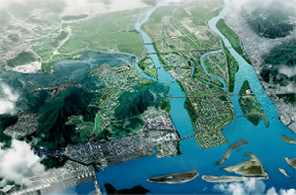

港口物流产业
- Home
- 战略产业
- 港口物流产业
概要
釜山力求成为连接世界和未来的东北亚时代的海洋城市及创造国际秩序的主体城市，致力于建立以世界级港口和最尖端物流园区为中心的港口物流基础设施。
-

组建国际产业物流城市
-
 釜山新港
釜山新港 -
 加德岛新机场
加德岛新机场
培育产业
增强釜山新港全球竞争力
建设釜山新港
- 至2020年在釜山江西区加德岛一带建设釜山港，增强世界级港口竞争力。
- 以新港航道为中心疏浚并清除陶土(2010年~2017年)
- 营造包括原有储备基地和大型修理造船厂的釜山新港后方物流园区(1995年~2020年)
- 建立一站式共同物流中心
- 在加德岛建设可24小时运营的国家第二关口新机场
营造釜山新港后方国际产业物流城市
组建世界尖端产业物流园区
- 计划至2020年在江西地区组建33平方公里的国际综合物流、尖端产业园区、研发园区等
- 按阶段组建地方产业园区、Eco Delta City亲水区域、研究开发特区、航空集群、一般产业园区
重新开发欧亚大陆的关口北港
重新开发釜山港北港
- 至2020年将釜山港沿岸码头到第四码头一带的153万平方公里营造成具备综合城市功能的世界级美港。
- 具备港口、休闲、商业设施的海洋旅游、商务中心
- 重新布置釜山站一带的铁路设施(2013年~2023年)
- 指定为海洋经济特别区试点园区，引导相关产业间的融合
实现海洋创造经济
搬迁公共机构和相关机构，聚集海洋水产相关机构。
- 在东三创新地区形成海洋水产公共机构创新集群
- 为进入北极研究中心等极地而打下基础并建立网络
- 设立海洋生物产业园区和海洋超级计算专门中心，为海洋创造产业研发培育打下基础
形成全球水产食品集群
与附近旅游资源链接营造世界级海洋水产综合空间。
- 釜山共同鱼市场的现代化(2015年~2018年)
- 将札嘎其市场营造成世界级水产景点(2013年~2018年)
- 建立水产食品产业集群(Sea Food Valley) Head Tower(2015年~2020年)
- 搬迁农林畜产检疫检查总部岭南地区总部检疫泊位(2010年~2016年)